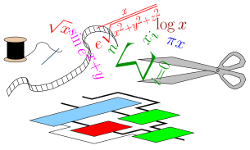

FloPoCo is an academic project. We academics write code in FloPoCo to write papers. After publication, maintaining FloPoCo is time consuming, and if there is no prospect of future paper, we tend not to do it.
This page lists FloPoCo's orphans: operators or techniques that worked at some point in FloPoCo, then didn't work any longer for some reason (evolving dependencies, framework changes, ...) and were not maintained because the original developer moved on.
We believe that most operators listed here do not deserve oblivion. All of them were the state of the art at their time. Some still are.
If you just want to generate VHDL for any of these operators, it is very probably possible and even easy: first set up a docker containing a version of Ubuntu as old as the code itself. Then follow the compilation instruction in the corresponding snapshot of FloPoCo source code.
We also believe that the operators listed here even deserve to be revived in the main FloPoCo branch. Each of them could be the subject of a nice internship or GSoC for somebody interested in building up expertise in hardware arithmetic.
This list is maintained by Florent de Dinechin and is ordered (highly subjectively) by relevance or interest... If I forgot something, please drop me a mail.
Random bits on FPGAs are cheaps as chips if done properly. The relevant techniques are described in David B. Thomas and Wayne Luk. The LUT-SR family of uniform random number generators for FPGA architectures.
There is an operator called src/random/urng/LutSrRng.cpp in the Obscure Branch origin/statistical_ops.
Don't believe the git blame, it was written by David Barrie Thomas.
To generate Gaussian or other distributions out of uniform random bits, several methods are available (non exhaustive list):
In the Obscure Branch origin/statistical_ops, there are all sorts of interesting things, for instance an operator called src/FPNormalCDF.cpp (very probably a floating-point Cumulative Distribution Function for a normal distribution) and a directory called distributions.
Most of this was probably written by David Barrie Thomas.
Some of it is replicated in another Obscure Branch called origin/random. It seems to contain random bits by David, not only random number generators.
This operator is described in Jérémie Detrey and Florent de Dinechin. Table-based polynomials for fast hardware function evaluation, and a more detailed study can be found in Jérémie's PhD thesis (in French).
It was ported to FloPoCo by Cristian Klein and lived happily there until version 2.5.
This operator is described in David B. Thomas. A general-purpose method for faithfully rounded floating-point function approximation in FPGAs.
This code was so well hidden that it alone justifies this whole page. It lives in an Obscure Branch called origin/random, in a directory called src/float_approx.
This operator is described in Nicolas Brisebarre, George Constantinides, Miloš Ercezovac, Silviu-Ioan Filip, Matei Iştoan, and Jean-Michel Muller. A high throughput polynomial and rational function approximations evaluator.
This operator is available in the Obscure Branch e-method.
The person to contact for questions is probably Matei Iştoan.
It was called FPSqrtPoly in versions of FloPoCo up to 4.2 and was written by Mioara Joldes and Bogdan Pasca.
It was developed by Jérémie Detrey then Sylvain Collange, and worked in versions up to 2.5.
The code is unplugged but still distributed with FloPoCo: at time of writing this, this ghost lives in the code/src/VHDLOperators/LNS directory.